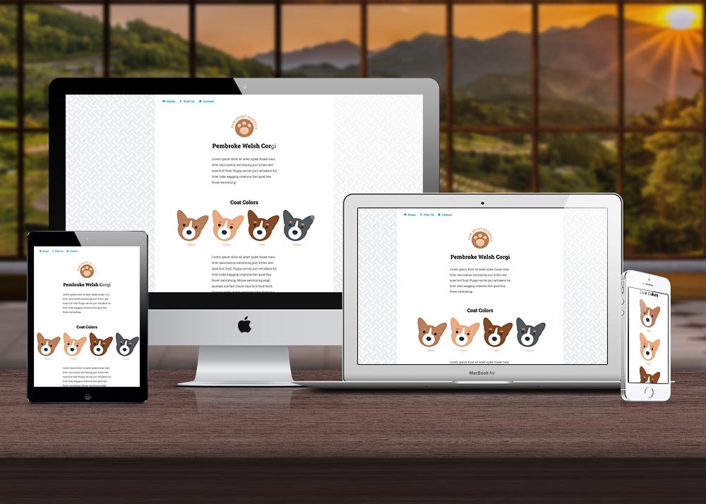
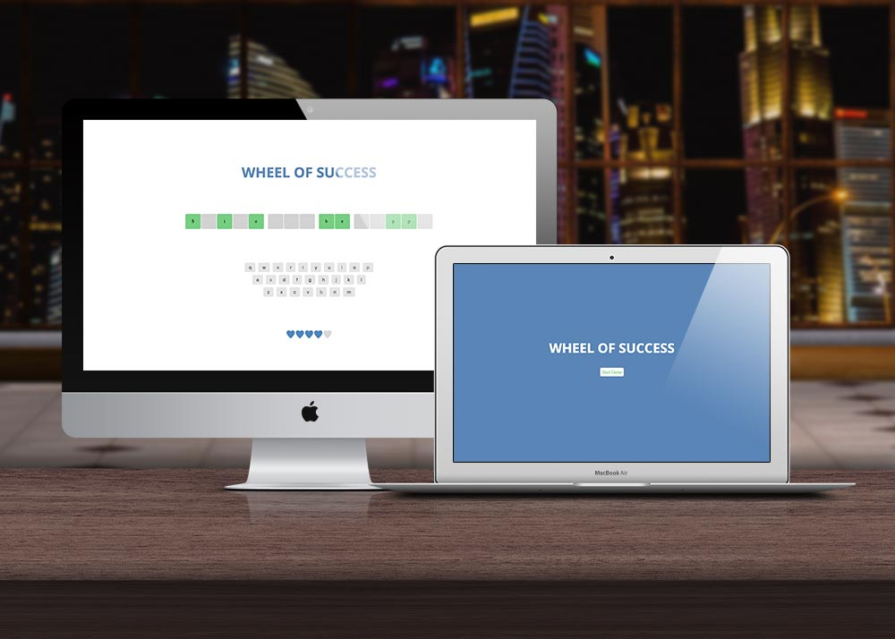
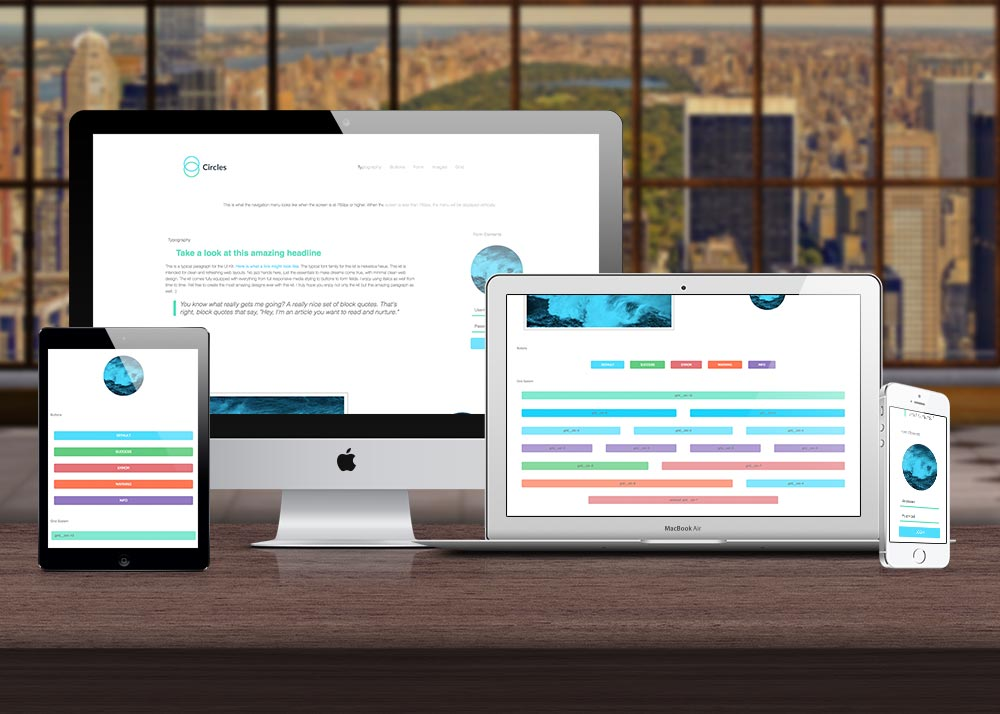
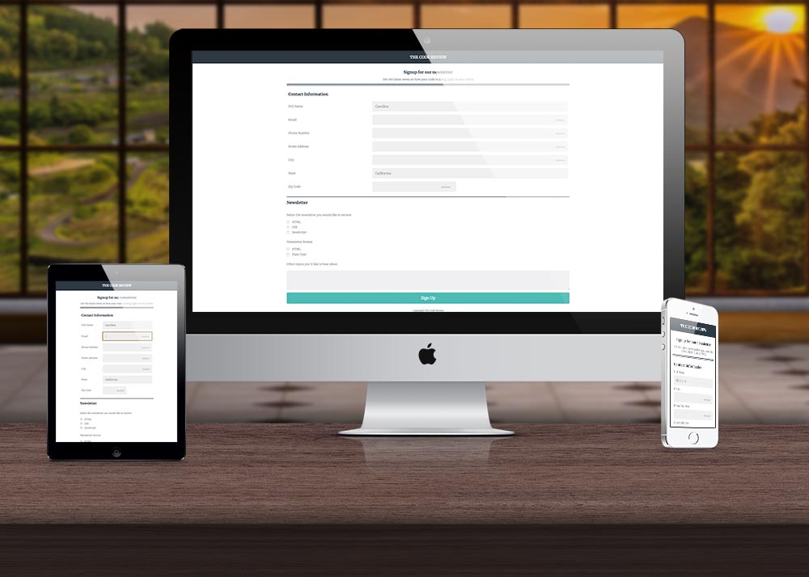

Portfolio
Filter
Web App Dashboard
Project Description
In this project, I built a web dashboard with JavaScript-driven charts and graphs. I also saved settings in the local storage so it would remain after re-loading the page.
Source Code DemoEmployee Directory
Project Description
In this project, I used the Random User Generator API (https://randomuser.me/) to grab information for 12 random “employees,” and used that data to build a prototype for an Awesome Startup employee directory. The app requests a JSON object from the API and parse the data so that 12 employees are listed in a grid with their thumbnail image, full name, email, and location. Clicking the employee’s image or name will open a modal window with more detailed information, such as the employee’s birthday and address.
Source Code DemoSVG Animations
Project Description
In this project, I used SVGs to spruce up and add a bit of character to a website. I was given a mockup, some basic HTML and CSS, and matching SVG files. I learned how to create SVG symbols and to manipulate SVGs depending of media queries.
Source Code DemoWheel of Success Game
Project Description
In this project, I created a browser version of “Wheel of Success”, a word guessing game where players will click letters from an onscreen keyboard to try to guess a random phrase.
Source Code DemoInteractive Video Player
Project Description
In this project, I built an HTML5 video player using JavaScript and the HTML5 Video API. Using the supplied mockups, video files, and transcript, I built an interactive video player that synchronizes a video and its transcript. The transcript highlight as the video progresses. When a user clicks any part of the transcript it takes them to the appropriate place in the video.
Source Code DemoWeb Style Guide
Project Description
In this project, I was provided an index.html file with a set of class names already defined. I was responsible for creating rules to style the web page using each of those class names. I create a sass project to do this, using partials, variables, extends, and mixins to apply the styles and classes to the style guide page.
Source Code DemoInteractive Photo Gallery
Project Description
In this project I created an interactive photo gallery using JavaScript and jQuery. Thumbnails and photos were provided with descriptions. At the top of the page I implemented a search function that will hide and show images depending on user input. When the user clicks on a thumbnail, the photo will display in a lightbox.
Source Code DemoOnline Registration Form
Project Description
In this project I built a responsive, mobile-friendly registration form using a wide variety of HTML form input types and attributes. Using the supplied mockup files, I built a mobile and desktop version of the form using media queries, and a "mobile-first" approach.
Source Code Demo